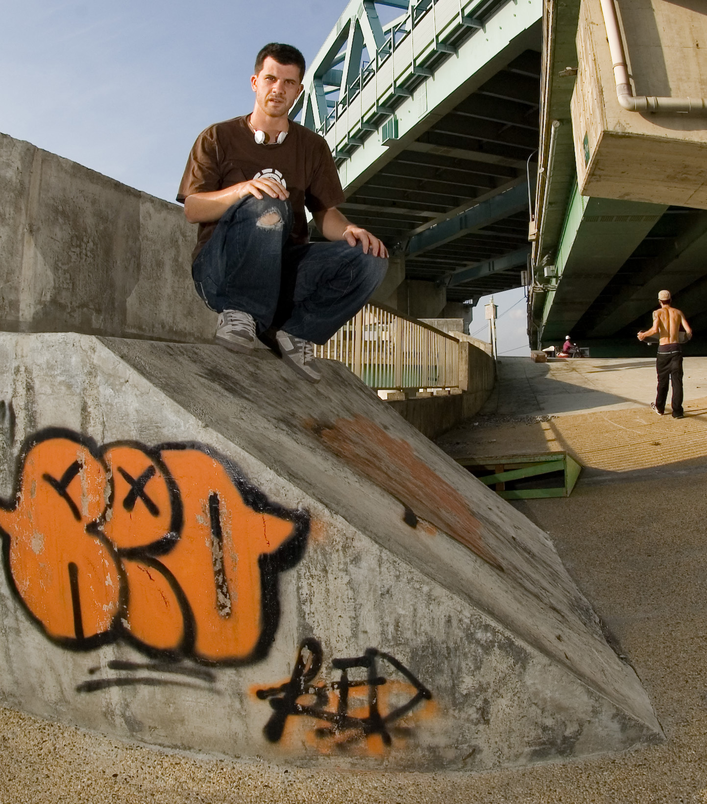

BiographySkate history
This is not a recent interest.
Long roots, not a late pivot.
As a teenager in Vancouver, Vaughan was one of the founding members of the VSC, the Vancouver Skatepark Coalition. The work was basic: show up, make the argument, keep the pressure going long enough that decision-makers had to pay attention.
In his twenties, living in Taiwan, he started the TSA, the Taichung Skateboarders Association, alongside local Taiwanese skaters building something at an early park there. Different city, different language, same argument: the people who actually skate should have a voice in where and how skating happens.
Back home now, the same work continues. Skate Undercover. Port Moody. Belong. The specifics change. The instinct does not.